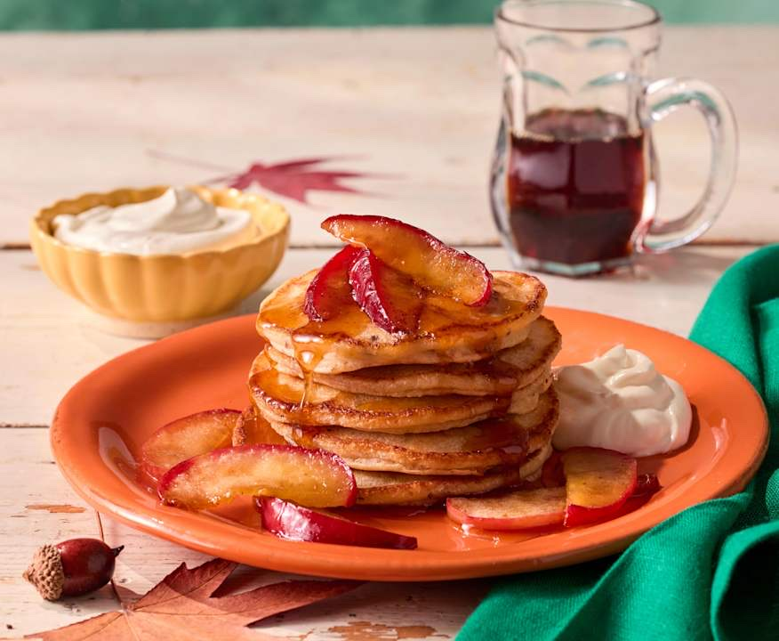

Apfel-Pancakes
Von
Cookidoo
Portionen:
24 Stück
Zubereitungszeit:
30 Minuten
Zutaten
300 g Mandeldrink
50 g Öl (plus etwas zum Backen)
100 g Apfel, in Stücken (3 cm)
30 g Zucker
220 g Mehl
10 g Backpulver
½ TL Salz
Zubereitung
Alle Teigzutaten (Mandeldrink, Öl, Apfelstücke, Zucker, Mehl, Backpulver, Salz) im Mixtopf im Modus Pürieren 30 Sek. zu einem glatten Teig mixen.
Eine beschichtete Pfanne mit 1 TL Öl bei mittlerer Hitze heiß werden lassen. Je Pancake eine kleine Kelle Teig hineingeben und 2–3 Minuten backen, bis die Oberfläche Blasen wirft. Wenden und noch 1–2 Minuten backen. Mit dem restlichen Teig genauso weitermachen. Schmeckt zum Beispiel mit Ahornsirup, Beeren oder pflanzlichem Joghurt.
Bring! Einkaufsliste App für iPhone und Android